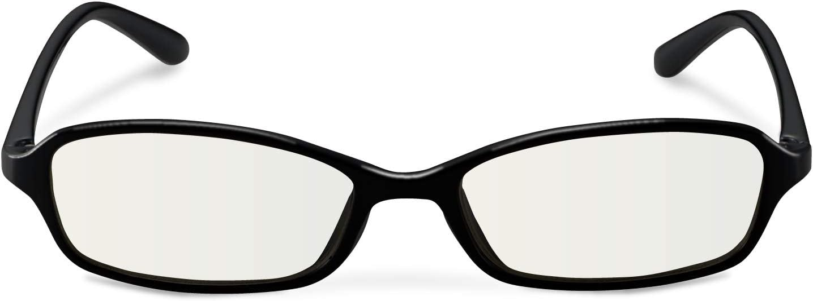
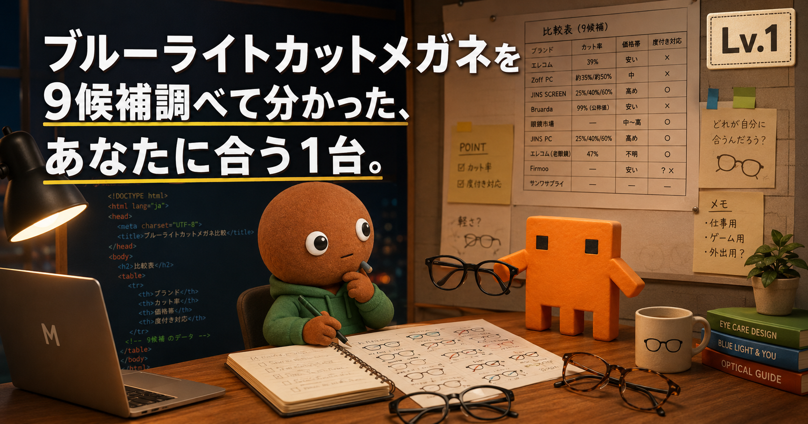
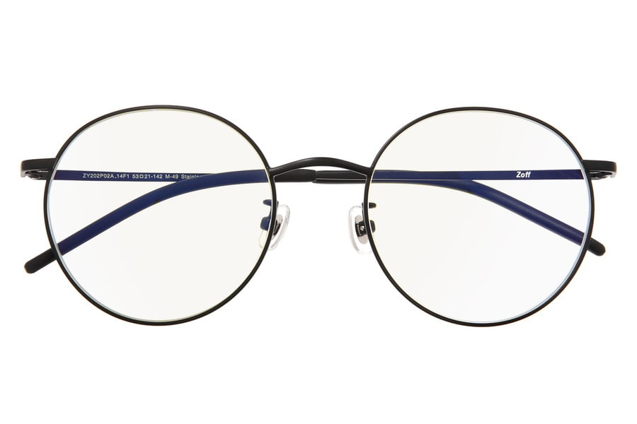
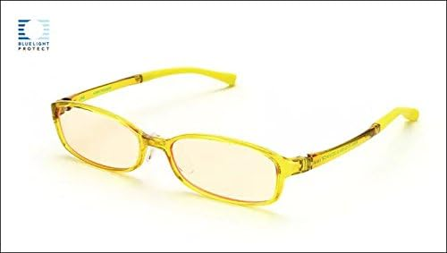
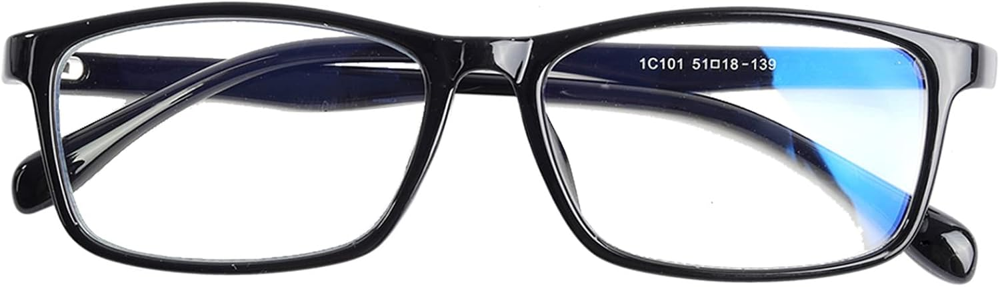
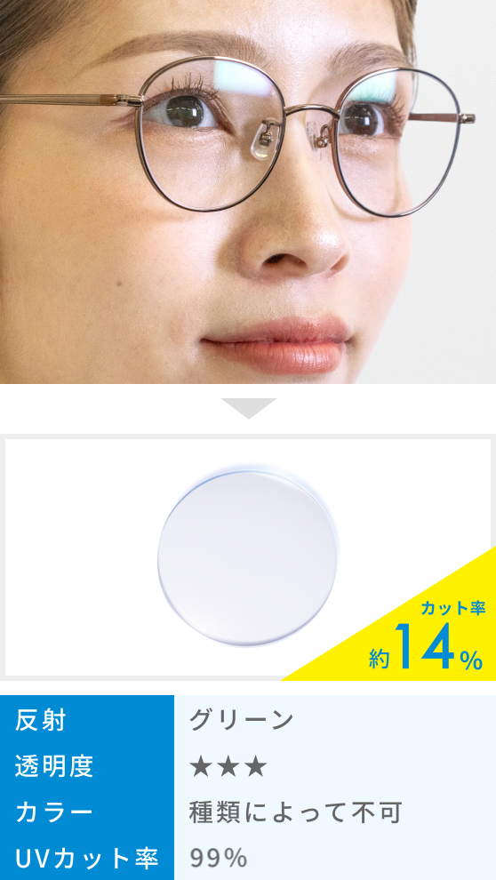
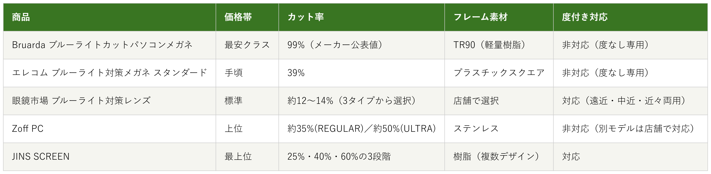

Amazonで見る在宅で画面を見る時間が増えてから、夕方には目の奥が重くなる人へ
ブルーライトカットメガネ9候補を調査。カット率・度付き対応の有無から、選び方の違う5商品を比較しました。
自分に合うブルーライトカットメガネを探す
この記事はAmazonアソシエイト・プログラムの参加者として、紹介料を得る場合があります（PR）。仕様は調査時点の情報です。
9候補から、選び方の違う5商品に絞りました。まずは気になる1本へ。向いている人・向いていない人と、低評価レビューもまとめています。
あなたの使い方に合う、1本を。

Amazonで見る
Amazonで見る
Amazonで見る
Amazonで見る
公式サイトを見る横にスワイプして、5商品を見比べる
調べてわかったのは、基準はシンプルでした。
1つ目は「カット率」。カット率が高いほどブルーライトを防ぐ一方、レンズの色味が強くなる傾向があります。
2つ目は「度付き対応の有無」。普段のメガネと兼用したいか、伊達メガネとして気軽に使いたいかで選ぶタイプが変わります。
価格帯には、幅がありました（フレーム代のみ、レンズ加工代は別の商品もあります）。

価格帯・カット率・フレーム素材・度付き対応の比較（価格帯は最安クラス〜最上位の5段階）
選ぶ決め手とにかく安さを重視するなら、この1本です。
参考：関連レビューブログを基にした集約
エレコムのブルーライト
対策メガネ スタンダードは、
初めてブルーライトカットメガネを試す人に最も向く1本です。
ブルーライトカット率は39%で、
可視光線透過率は97%です。
スクエアフレームのクリアレンズです。
質量16gと軽量です。
紫外線透過率は1.0%以下です。
選ぶ決め手カット率を選べることを重視するなら、この1本です。
参考：レビューまとめサイトを基にした集約
Zoff PCは、
シーンに合わせてカット率を
切り替えたい人に最も向く1本です。
REGULAR TYPE（カット率約35%）と
ULTRA TYPE（カット率約50%）の
2タイプから選べます。
フレームはステンレス製で、重さ22.6g。
可視光線透過率は95%、
紫外線カット率は99.9%以上です。
選ぶ決め手度付き対応を重視するなら、この1本です。
参考：レビュー記事
JINS SCREENは、
普段のメガネと兼用したい人に
最も向く1本です。
近視・遠視用の度付きレンズに
対応しています。
カット率は25%・40%・60%の3段階から選べます。
フレーム価格は6,600円からで、
ブルーライトカットレンズの
加工代が別途5,500円かかります。
選ぶ決め手軽さを重視するなら、この1本です。
参考：サクラチェッカーを基にした集約
Bruardaは、
まずは気軽に試したい人に
最も向く1本です。
ブルーライトカットパソコンメガネは、
TR90素材で軽量な
伊達メガネタイプです。
サクラチェッカーの「パソコン用メガネ
サクラ評価無し人気ランキング」で
1位に掲載されており、サクラ度は0%（合格）でした。
評価は3.79/5（54件のレビュー）です。
Amazonで見る→選ぶ決め手老眼対応を重視するなら、この1本です。
参考：口コミ・比較記事を基にした集約
眼鏡市場のブルーライト
対策レンズは、
遠近両用・中近両用のメガネを探している人に最も向く1本です。
眼鏡市場は全国の実店舗で
処方するメガネチェーンのため、
Amazon商品ページはありません。
特殊加工価格は4,400円です
（フレーム代は別）。
遠近両用・中近両用・近々両用まで対応します。
在宅で画面を見る時間が増えてから、夕方には目の奥が重くなることが増えました。
安いのから有名メーカーのものまで、種類が多すぎて迷います。なので今回、価格.comの検索結果を使って調査しました。あわせて各メーカーの公式サイトと、サクラチェッカーも確認しました。
各商品ごとに、向いてる人・向いてない人も調べているので、自分に合ったブルーライトカットメガネを探してみてください。
今回、価格.comの検索結果を使って調査しました。あわせて各メーカーの公式サイトと、サクラチェッカーも確認しました。
エレコム1機種・Zoff1機種・JINS3機種・Bruarda1機種・眼鏡市場1機種・Firmoo1機種・サンワサプライ1機種、という9候補です。
この中から、5つに絞りました。
JINS PCは、採用したJINS SCREENと役割が重複するため見送りました。SCREENの方がカット率を25%・40%・60%の3段階から選べる分、比較の幅が広いと判断しました。
エレコムの老眼鏡タイプ（R-BC10-L01BK）は、カット率47%で+1.0〜+3.0の度数展開という魅力的な商品でしたが、公式サイト・販売店サイトとも実際の販売価格を確認できなかったため見送りました。推測の価格で紹介することはしない方針です。
Firmooは、商品名に「睡眠改善」「目の疲れを緩和する」という健康効能の断定表現が含まれており、慎重を期して見送りました。
サンワサプライは、検索した限りブルーライトカット製品は液晶保護フィルムが中心で、メガネ製品は確認できませんでした。
上の9候補とは別に、サクラチェッカーが「危険」「高リスク」と判定した商品も3つ調べました。
個別レビュー本文の真偽までは検証できないため、機械的に検出された事実だけを正直に書きます。
JSSEVNのブルーライトカットメガネ（95%カットをうたう商品）は、サクラ度「危険」判定でした。相場5,574円に対し1,060円という、極端な値下げ価格で販売されていました。要注意メーカーに分類されており、中国を示唆する電話番号を持つ海外ショップからの出品でした。
TERASOのブルーライトカットメガネは、サクラ度「非常に高い危険度」でした。レビュー件数867件は、カテゴリ平均137件の633%にあたる異常な多さでした。価格はサクラ製品の平均価格に近い水準まで下げられていました。
Cyxusのブルーライトカットメガネ（透明レンズ）は、サクラ度「高リスク」でした。レビュー件数890件は、カテゴリ平均の約6.5倍。公式サイトが無く、推定中国メーカーとの指摘もありました。
サクラチェッカーによれば、パソコン用メガネカテゴリはサクラ製品が全体の42〜50%を占めるとされ、価格は正規品より平均60〜64%安く設定される傾向があるとのことでした。今回私が採用したエレコム・Zoff・JINS・Bruarda・眼鏡市場は、いずれも公式サイトを持つメーカー・チェーンでした。
9候補以上を比較しました。一番驚いたのは、カット率が高ければ高いほど良いわけではないという点でした。
眼鏡市場の公式サイトにも、カット率が高いほど視界が暗くなる可能性があるため、使用シーンに合わせた選択が重要だと明記されていました。
もう1つの発見は、サクラチェッカーによればパソコン用メガネカテゴリのサクラ製品比率が42〜50%と、他のカテゴリと比べても高い水準だったことです。
今回Bruardaのように「合格」判定を受けた安価な商品も実在したので、価格だけで判断せず、出典を確認する大事さを改めて実感しました。
ここまで読んでまだ迷ったら、カット率が3段階から選べて度付きにも対応するJINS SCREENが最初の1本におすすめです。
カット率の数値がEN ISO12312-1:2022規格に基づいて算出されている点も、外しにくい理由です。
Amazonで見る→Q. ブルーライトカットメガネは何を基準に選べばいい？
A. まず「カット率」でどの程度カットしたいかを決め、次に「度付き対応の有無」で普段のメガネと兼用するか伊達メガネとして使うかを決めるのがおすすめです。
Q. カット率は高いほどいい？
A. カット率が高いほどレンズの色味が強くなる傾向があるため、使用シーンに合わせて選ぶのがおすすめです。
Q. 度付きにも対応してる？
A. 今回の5商品のうち、JINS・眼鏡市場の2つが度付き対応（眼鏡市場は遠近両用・中近両用にも対応）でした。エレコム・Zoff・Bruardaは度なし専用です（Zoffは店舗で度付き対応の別モデルも扱っています）。
Q. 安いものと高いもの、何が違う？
A. 今回の5商品では、カット率を選べる段階数や、度付き対応・遠近両用対応などの機能の有無が価格差につながっていました。
Q. サクラレビューが心配。何を見ればいい？
A. サクラチェッカーのような第三者検証サイトで、レビュー件数がカテゴリ平均から極端に外れていないかを確認するのがおすすめです。